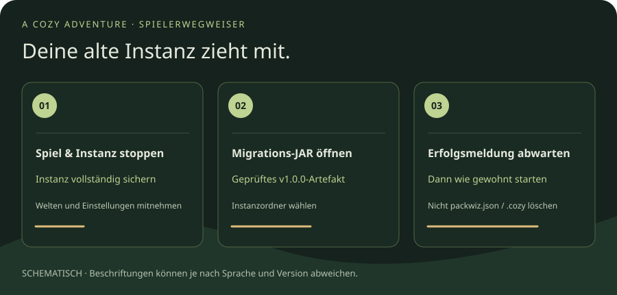

Schon v0.0.2 gespielt? Deine Instanz bleibt.
Eine neue Prism-ZIP ist für neue Instanzen. Für
deine bestehende Testinstallation benötigst du die zur geprüften
Version gehörende
A-Cozy-Adventure-Prism-v1.0.0.migration.jar. Sie steht
erst mit den freigegebenen Artefakten beziehungsweise dem späteren
Release zur Verfügung – hier gibt es noch keinen
v1.0.0-Live-Download.
- Minecraft schließen, Instanz nicht parallel starten und den gesamten Instanzordner sichern.
- Die geprüfte Migrations-JAR mit Java öffnen (mindestens Java 17, Java 25 funktioniert ebenfalls). Wenn der Doppelklick keine Java-Anwendung startet, die Datei über „Öffnen mit“ einer vorhandenen Java-Laufzeit zuordnen. Keine Entwicklerbefehle nötig.
-
Den Instanzordner wählen, der
instance.cfg,mmc-pack.jsonundminecraftbeziehungsweise.minecraftenthält. Prism kann den Instanzordner über das Kontextmenü öffnen; nicht nur den darin liegenden Spielordner wählen. -
Erfolgsmeldung abwarten. Das Programm sichert
instance.cfg.before-customizationund stellt den Pre-Launch-Befehl um. Danach wie gewohnt starten; am Schutzfenster erkennst du den neuen Weg.
Welten, eigene Mods und Optionen werden bei der Migration nicht
verändert. Bei unbekannten eigenen Startbefehlen oder beschädigtem
Zustand hält sie an. Sichere den Fehlerbericht;
lösche weder packwiz.json noch
.cozy. Ohne diese einmalige Umstellung aktiviert sich der Schutz nicht
selbst.
